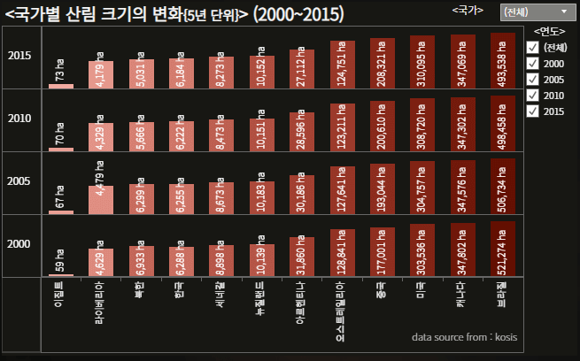

불타는 지구, 1년만에 벨기에 크기의 숲이 죽었다
나사(NASA)에 따르면 미국에서는 매해 산불로 3만 6,000㎢ 크기의 숲이 사라진다. 미국에서만 벨기에 국토보다도 큰 규모의 숲이 1년 만에 소실된 것이다.
지난해 캘리포니아 산불의 경우 3주간 2,670㎢ 이상의 숲을 태우며 1,600여 채의 가옥을 불살랐다. 700명에 가까운 사상·실종자를 발생시키기도 했다. 이때 소실된 범위는 서울의 3배 크기를 넘는다.
더욱 심각한 것은 이러한 산불이 더는 ‘특별한 사건’이 아니게 될 수 있다는 것이다. 미 국가 기후 평가 보고서에 따르면 지구 온난화로 기온이 오르면서 식물이 건조해져 산불이 나기 더 쉬워지고 있다.
아마존 좀 먹는 인간의 불씨
‘지구의 허파’로 불리는 아마존 역시 산불의 영향을 피할 수 없다. 지난달 발생한 아마존 화재에서도 한 달간의 긴 화재로 1만 6,187㎢의 열대우림이 소실됐다.
INPE의 조사에 따르면 아마존은 매년 약 7만 건 이상의 산불이 발생하고 있다. 연간 2,023㎢씩 아마존이 줄어들고 있다.
문제는 이러한 산불 대부분이 인간에 의한 산불이라는 점이다. 목초지를 확보하기 위한 아마존 주변국 목장주들에 의한 방화와 벌채, 실수로 인한 산불 등으로 매년 지구의 허파가 사라지고 있다.
아마존 외에도 특히 산불이 심한 호주, 미국, 남미 대륙 그리고 한국 역시 심각한 양상을 보이고 있다.
산불 위험 국가, '한국'
한국 역시 건조한 겨울철 산불이 빈번하면서도 정도가 심각한 국가다. 지난 4월에도 동시에 발생한 강릉-동해 산불과 고성-속초 산불의 경우 국가재난사태로 번지기 까지 했다.
산림청에 따르면 지난 22년간 매년 평균 458건의 산불이 발생했다. 이로인해 총 1억 4,000만 평 가량의 숲이 사라졌다. 산불로 인한 피해 금액 역시 3,340억을 돌파했다.
피해 금액이나 수치로 보이는 숲의 소실만이 문제인 것도 아니다. 대형 산불로 인해 발생한 이재민과 이재민들의 심리적 피해 역시 무시할 수 없다. 또한 숲의 소실로 인한 홍수 위험성 증가, 야생 동물 보금자리 파괴 등 환경적인 문제 역시 심각하게 우려되는 상황이다.
사람이 문제다, 연간 입산자 실화 700건 넘어
한국 역시 건조한 겨울철 산불이 빈번한 국가다. 게다가 매년 그 규모가 커지는 양상을 보이고 있다. 지난 4월에도 동시에 발생한 강릉-동해 산불과 고성-속초 산불이 국가재난사태로 번지기까지 했다.
산림청에 따르면 지난 22년간 매년 평균 458건의 산불이 발생했다. 이로 인해 총 1억 4,000만 평가량의 숲이 사라졌다. 산불로 인한 피해 금액 역시 3,340억 원을 돌파했다.
피해 금액이나 수치로 보이는 숲의 소실 넘어의 문제도 크다. 대형 산불로 인해 발생한 이재민과 이재민들의 심리적 피해 역시 무시할 수 없다. 숲의 소실로 인한 홍수 위험성 증가, 야생 동물 보금자리 파괴, 사막화 가능성 증가 등 환경적인 문제 역시 심각하게 우려되는 상황이다.
푸르름 잃고 있는 한반도
한국의 산림은 해를 거듭하며 그 규모가 축소되고 있다. 목축과 농사를 위한 임지 개발, 산불로 인한 소실이 이루어지고 있다.
한국은 특히 자원 가치가 높은 장령림이 산림의 80%를 차지하고 있다. 이러한 한국의 특성상 지속적인 소실은 장기적인 피해로 이어질 가능성이 더욱 큰 것으로 분석되고 있다.
정부 역시 이러한 심각성을 인지하고 식목과 사유림 국유화 등의 정책을 펼치고 있다. 지난 2015년 통계에 따르면 2010년과 대비해 국유림은 4.9% 증가했고 공유림과 사유림은 각각 4.3%, 2.0%가 감소했다.
한국 외에도 미국, 중국 등이 적극적으로 산림 소실에 대처하고 있지만, 기술력이 부족한 국가에서 발생하는 소실로 전 지구 단위로 보자면 여전히 산림 소실은 미래에 대한 심각한 위협이다.
메말라가는 지구

산불로 인해 심각하게 우려되는 사태 중 하나는 바로 사막화다. 산불이 사막화로 이어진다는 것을 비약으로 느낄 수 있지만 실제로 미국 산림청은 산불로 인한 소실로 심각한 수자원 고갈과 이로 인한 사막화에 대한 우려를 매년 보고서로 제출하고 있다.
최근 전 지구적으로 사막화되는 면적은 해마다 6만㎢ 정도다. 이에 따른 피해 농촌 인구는 해마다 약 1,700만 명이나 발생한다. 몽골 같은 일부 국가에선 무분별한 개발, 산불로 인한 소실과 가뭄 등으로 매년 3,500㎢(서울시 면적의 6배)의 토지가 사막화되고 있다.
사막화는 공업화와 함께 황사의 결정적인 주원인으로 지목되고 있다. 먼 얘기로 느낄 수 있지만 사실 한국에도 가까운 위협이 되고 있는 것이다.